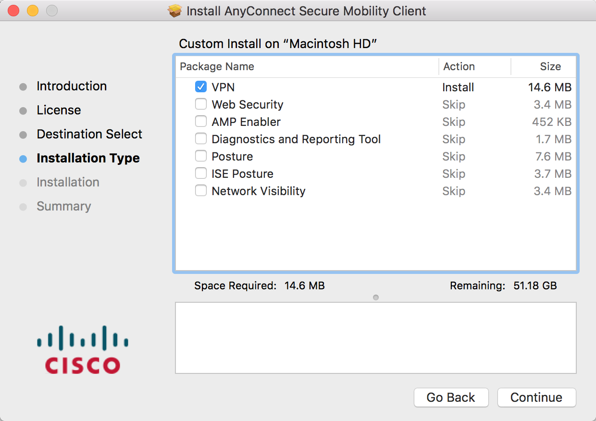
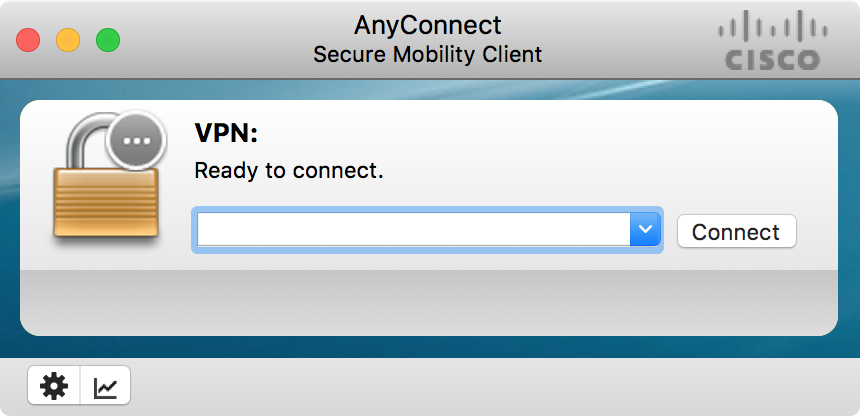
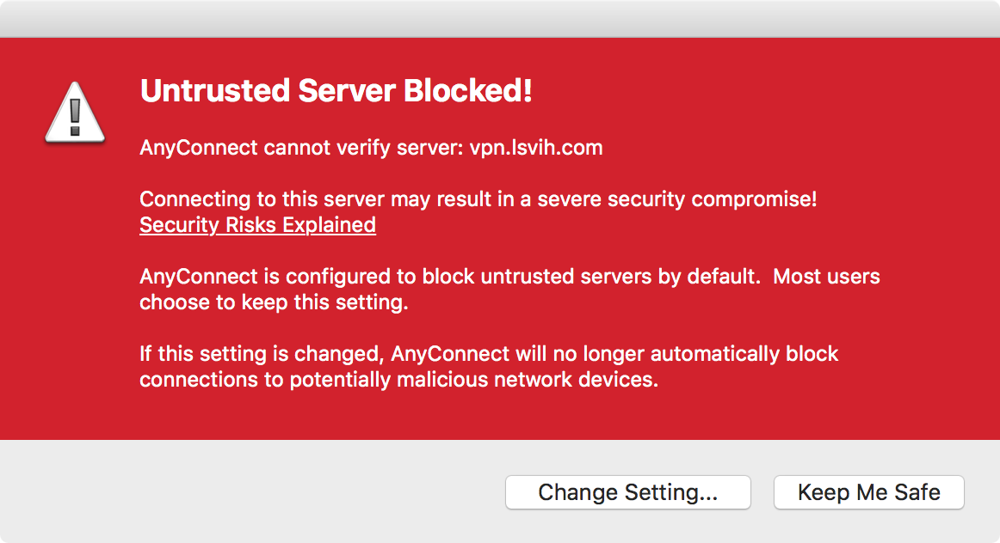
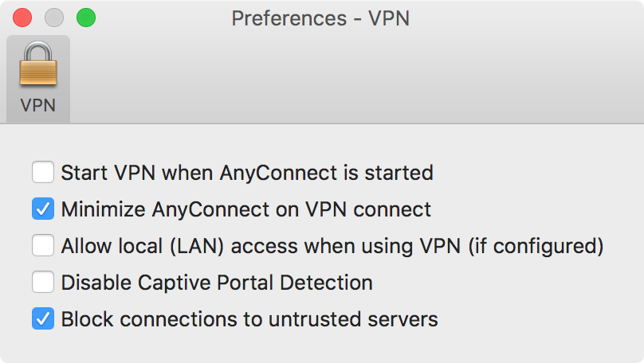

Visit THIS PAGE;
Select the corresponding platform, and download client.
Run setup program, using default setting.
Tip: Only choose "install VPN" option while install progress would improve rate of success.


Fill the server form with "vpn.lsvih.com".
It might alert that "Connect to untrusted server"

Enter preference panel, uncheck the "Block conncections to untrusted servers" option.
Refill server address, username and password.